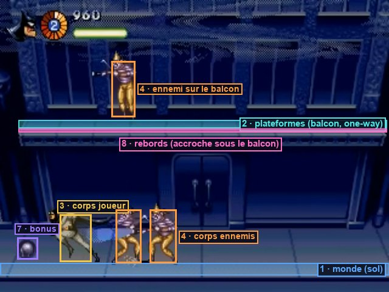
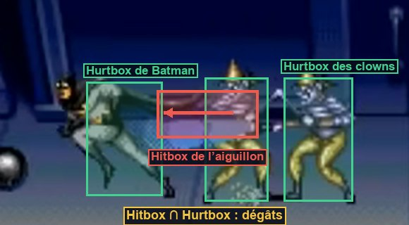

Les fondations
Les briques que tout le reste du jeu utilisera : des entrées abstraites, des couches de collision nommées, un état de partie global, des composants de vie et de dégâts, et une machine à états. Chaque brique est testée seule avant de servir.
Ce que tu vas apprendre
Godot 4
- La carte des entrées et les scripts d'éditeur (
@tool) _physics_processet les ticks physiques- Couches et masques de collision,
Area2D - Autoload,
class_name, signaux typés @onready,owner,await
Développement de jeu
- Séparer les touches et les actions
- La boucle à pas fixe
- La composition par composants
- Hitbox et hurtbox
- La machine à états finis
- Le banc d'essai : tester une brique seule
Les entrées
2.1 · Créer une action à la main
Le code ne doit jamais demander « la touche K est-elle enfoncée ? », mais « le joueur veut-il sauter ? ». On déclare des actions (jump, attack…) et on leur associe des touches et des boutons de manette. Changer de clavier, brancher une manette ou laisser le joueur reconfigurer ne demande alors aucune modification du code.
- (Input Map).
- Dans le champ « Ajouter une nouvelle action », tape
jump, puis Ajouter. - Clique sur le + à droite de
jump, appuie sur K, valide. Recommence avec Espace. - Observe l'option « Physical Keycode » : elle désigne la position de la touche, pas la lettre imprimée dessus.
Il faut ainsi sept actions, chacune avec plusieurs touches et boutons. Les saisir à la main est fastidieux et source d'oublis : on va l'automatiser.
2.2 · Un script d'éditeur pour toutes les actions
| Action | Clavier (position physique) | Manette | Mega Drive |
|---|---|---|---|
move_left / move_right / move_up / move_down | Flèches ou W A S D (= Z Q S D sur AZERTY) | Croix + stick gauche | Croix |
attack | J et L | X et B (Xbox) | A et C |
jump | K et Espace | A (Xbox) | B |
start | Entrée | Start / Menu | Start |
- Dans le Système de fichiers, clic droit sur
res://tools/→ Nouveau script. Hérite deEditorScript, nomsetup_inputs.gd. - Remplace son contenu par le code ci-dessous.
- Script ouvert dans l'éditeur de script : (Ctrl Maj X / ⌘ Maj X). La Sortie affiche « Actions créées : … ».
- , puis rouvre la carte des entrées : les sept actions y sont.
Comprendre le code
@tool+extends EditorScript: ce script ne tourne pas dans le jeu mais dans l'éditeur, quand tu demandes à l'exécuter. Sa fonction d'entrée est_run().- Une action est enregistrée dans les paramètres du projet sous la clé
input/nom, sous forme d'un dictionnaire : une zone morte et une liste d'événements. Le script écrit exactement ce que l'interface écrirait. for action_name: String in actions: on parcourt les clés du dictionnaire, en typant la variable de boucle.physical_keycode: la touche à l'emplacement de W sur un clavier QWERTY, c'est-à-dire Z sur un AZERTY. Les commandes restent bien placées quelle que soit la langue du clavier.
Dès qu'une manipulation de l'éditeur est longue, répétitive ou facile à rater, un petit script d'éditeur la rend fiable et reproductible. Tu en écriras un autre à l'étape 08, pour convertir des images en couleurs indexées.
La boucle à pas fixe
2.3 · _process ou _physics_process ?
_process(delta) suit l'écran : son delta varie (0,016 s à 60 Hz, 0,007 s à 144 Hz, 0,05 s si le jeu rame). _physics_process(delta) est appelé à intervalle fixe : 60 fois par seconde avec nos réglages, quoi qu'il arrive. Les collisions, les sauts et l'IA y sont reproductibles : un saut a toujours la même hauteur. La Mega Drive faisait pareil : un « pas » de jeu par image (interruption VBlank, 60 Hz).
Règle du parcours : tout le gameplay va dans _physics_process(). _process() ne sert qu'aux effets purement visuels (clignotements, interface).
Les vitesses du jeu original se mesurent en pixels par image. Comme un tick physique dure une image, la conversion est directe :
- Dans
res://sandbox/box.gd, renomme_processen_physics_process. Lance : rien ne change en apparence. - Ouvre le Débogueur → Moniteurs pendant que le jeu tourne et coche Time → Physics Process et Time → FPS. Les ticks physiques restent à 60 par seconde.
Les couches de collision
2.4 · Nommer les couches

Chaque objet physique est sur certaines couches (collision_layer) et regarde certaines couches (collision_mask). A détecte B si le masque de A contient une couche de B. Un batarang regarde seulement les zones vulnérables des ennemis : il ignore les murs, les autres batarangs et Batman. Bien régler les masques évite des bugs et des calculs inutiles.
| N° | Nom | Qui est dessus | Qui la regarde |
|---|---|---|---|
| 1 | monde | Sols, murs | Corps du joueur et des ennemis |
| 2 | plateformes | Balcon, plateaux de camions (traversables par-dessous) | Corps du joueur et des ennemis |
| 3 | corps_joueur | Le corps de Batman | Bonus, déclencheurs, prise du costaud, zone de chute |
| 4 | corps_ennemis | Le corps des ennemis | Personne dans le niveau 1 |
| 5 | hurtbox_joueur | Zone vulnérable de Batman | Coups, balles et bombes ennemis |
| 6 | hurtbox_ennemis | Zones vulnérables des ennemis, boss, objets cassables | Poing et projectiles de Batman |
| 7 | bonus | Zone de ramassage des bonus | Personne (c'est le bonus qui regarde la couche 3) |
| 8 | rebords | Zones d'accroche sous le balcon | La sonde « mains » de Batman |
- (Layer Names → 2D Physics).
- Saisis les huit noms du tableau (
monde,plateformes…). Désormais, l'Inspecteur affiche ces noms au survol des cases de couche. - Crée
res://core/layers.gd:
class_nameclass_name Layers enregistre le script comme un type global : partout dans le projet, on peut écrire Layers.PICKUPS sans rien importer. Sur un script qui étend un nœud, class_name le fait aussi apparaître dans la fenêtre « Ajouter un nœud », comme un nœud natif. Un masque est un entier dont chaque bit vaut une couche : la couche 3 est le bit 2, soit 1 << 2 = 4.
L'état de la partie
2.5 · L'autoload Game
Quand on passe d'une scène à une autre, l'ancienne est détruite, avec toutes ses variables. Le score, les vies et l'arme en main doivent survivre : on les range dans un autoload, un nœud que Godot crée au démarrage, place à la racine, et ne détruit jamais. Son nom devient global : Game.score marche depuis n'importe quel script.
- Crée
res://autoload/game.gd(hérite deNode) avec le code ci-dessous. - : chemin
res://autoload/game.gd, nomGame, Ajouter. Vérifie que « Activer » est coché.
Comprendre le code
signal score_changed(score: int): un signal déclaré dans le script, avec un paramètre typé. On l'émet avecscore_changed.emit(score).enum Hero { BATMAN, ROBIN }: des noms pour des entiers (0 et 1).Game.Hero.ROBINse lit mieux que1.&"batarang": unStringName, une chaîne « internée » que Godot compare très vite. On l'utilise pour les identifiants (armes, états, animations).creditsetcredits_setting: le premier est l'état de la partie (consommé par les continues), le second un réglage (choisi dans les options). Les séparer évite qu'un nouveau départ efface le réglage.while … add_life(): unwhileplutôt qu'unif, au cas où un gros bonus franchirait deux paliers d'un coup.- Aucune fonction ne touche à l'affichage.
Gameannonce ce qui change ; c'est au HUD (étape 10) d'écouter.
2.6 · Tester le patron Observateur
- Dans
res://sandbox/, crée une scène 2Dobserver_test.tscnavec un script sur la racine :
F6. La Sortie affiche « Score : 15000 », puis « Score : 21000 » et « Vies : 3 ». Pendant que le jeu tourne, ouvre l'onglet Distant (Remote) au-dessus de l'arbre de scène : tu vois le nœud Game à la racine, à côté de ta scène. C'est l'arbre réel du jeu en cours ; clique sur Game pour lire ses variables en direct.
func(s: int) -> void: print(...) est une lambda : une fonction sans nom, définie sur place. Pratique pour une réaction d'une ligne. Pour plus long, on écrit une vraie méthode et on la passe : Game.score_changed.connect(_on_score).
Les composants
Batman, un clown, une poubelle et la montgolfière du Joker ont tous de la vie et peuvent être touchés. Plutôt que d'écrire quatre fois la même logique, ou d'imaginer une hiérarchie de classes géante, on fabrique de petits composants (un nœud, un rôle) qu'on assemble dans chaque scène, comme des pièces de Lego. Besoin de vie ? On ajoute un nœud Health.
2.7 · Health, Hurtbox, Hitbox

Crée ces trois fichiers dans res://core/.
Comprendre le code
- Qui regarde qui : une
Area2Da deux interrupteurs.monitoring= « je détecte les autres »,monitorable= « les autres peuvent me détecter ». La Hitbox détecte, la Hurtbox est détectée : chacun coupe l'interrupteur dont il n'a pas besoin. @export var health: Health: un export de nœud. Dans l'Inspecteur, tu désignes le nœudHealthen cliquant ou en le glissant. Pas de chemin écrit en dur : renommer le nœud ne casse rien.area as Hurtbox: renvoie l'objet s'il est bien uneHurtbox, sinonnull. On ignore ainsi toutes les autres zones._already_hit: sans cette liste, un poing qui reste 10 images sur un ennemi le toucherait 10 fois. Chaque attaque touche une cible au plus une fois, jusqu'au prochainreset_hits().set_deferred("monitoring", false): pendant un signal de collision, Godot interdit de modifier l'état physique (erreur « Function blocked during in/out signal »).set_deferredreporte la modification à la fin de l'image.
2.8 · Un banc d'essai pour les dégâts
Avant d'utiliser une brique dans le vrai jeu, on la teste seule, dans une scène minuscule qui ne sert qu'à ça. Si quelque chose cloche plus tard, tu sauras que ce n'est pas elle. Les professionnels font la même chose avec des tests automatisés et des « niveaux de test » remplis de cas limites.
- Nouvelle scène 2D
res://sandbox/hit_test.tscn, racineHitTest. Construis cet arbre (les typesHealth,Hurtbox,Hitboxapparaissent dans « Ajouter un nœud » grâce àclass_name) :
HitTest (Node2D, hit_test.gd)
├── Target (Node2D) position (200, 112)
│ ├── Health max_health = 3
│ ├── Hurtbox couche 6 seule · masque vide · health = Health
│ │ └── CollisionShape2D RectangleShape2D 16×32
│ └── ColorRect 16×32 · position (-8, -16) · rouge
└── Fist (Hitbox) position (20, 112) · couche vide · masque 6 seul
└── CollisionShape2D CircleShape2D rayon 6
- Pour régler couches et masques : Inspecteur → Collision → clique sur les cases numérotées. Une case allumée = couche active.
- Pour
healthsur la Hurtbox : clique sur « Assigner… » et choisisHealth. - Attache ce script à
HitTest:
Active (Debug → Visible Collision Shapes), puis F6. Le cercle traverse la cible trois fois : « reste 2 », « reste 1 », « reste 0 » puis « Cible détruite ». Ensuite, plus rien : une cible morte n'encaisse plus.
- Rien ne s'affiche : vérifie que le masque du
Fistcontient la couche 6 et que laHurtboxest sur la couche 6. C'est l'erreur la plus fréquente de tout le projet. - « Invalid get index 'damaged' (on base: 'null instance') » :
$Target/Healthne trouve pas le nœud. Vérifie les noms exacts, majuscules comprises. - Touché, mais « reste » ne baisse pas : le champ
healthde la Hurtbox n'est pas assigné.
@onreadyUne variable @onready est initialisée juste avant _ready(), quand les enfants existent. Écrire var fist: Hitbox = $Fist sans @onready échouerait : à la création du script, l'enfant n'est pas encore là.
La machine à états
2.9 · State et StateMachine
Un personnage est toujours dans un seul état à la fois : au sol, en l'air, suspendu, touché… Chaque état a son propre script avec trois moments : enter() à l'entrée, physics_update() à chaque tick, exit() à la sortie. Un état décide lui-même quand passer au suivant. On évite ainsi les forêts de if is_jumping and not is_hurt and not is_hanging…. Tu sentiras concrètement le problème à l'étape 03.
Comprendre le code
- Les états sont des nœuds enfants de la machine. Le nom du nœud sert d'identifiant :
transition_to(&"Air")active l'enfant nomméAir. - Un état ne change pas l'état lui-même : il demande, via le signal
finished. Seule la machine faitexit()puisenter(), toujours dans cet ordre. data: un dictionnaire pour passer une information au prochain état (par exemple la hauteur du rebord auquel s'accrocher).owner: la racine de la scène enregistrée qui contient ce nœud. Pour un état de Batman,ownerest Batman.await owner.ready: dans Godot, les enfants sont prêts avant leur parent. La machine suspend son_ready()jusqu'à ce que le propriétaire soit prêt, pour que le premierenter()trouve tout en place.
awaitawait signal met la fonction en pause jusqu'à l'émission du signal, sans bloquer le jeu : le reste continue de tourner. La fonction devient une coroutine. C'est très pratique, mais dangereux pour la logique de jeu : si l'objet change d'avis pendant l'attente, la fonction se réveille quand même. On l'utilisera surtout pour des séquences (cinématiques, transitions).
2.10 · Tester la machine sur un feu tricolore
Une machine à états se teste mieux sur un objet trivial que sur un personnage. Un feu tricolore a trois états et une règle simple.
- Crée
res://sandbox/light_state.gd:
- Nouvelle scène
res://sandbox/traffic_light.tscn:
TrafficLight (Node2D, traffic_light.gd) position (160, 112)
├── Lamp (ColorRect) 24×24 · position (-12, -12)
└── StateMachine (StateMachine) initial_state = Green
├── Green (Node, light_state.gd) color vert · duration 2 · next = Orange
├── Orange (Node, light_state.gd) color orange · duration 0.7 · next = Red
└── Red (Node, light_state.gd) color rouge · duration 2 · next = Green
- Pour attacher le même script à trois nœuds : sélectionne-les tous (Maj + clic), puis glisse
light_state.gddepuis le Système de fichiers sur la sélection. Règle ensuite chaque nœud dans l'Inspecteur.
F6. Le carré passe vert → orange → rouge → vert… La Sortie affiche « → Green », « Green → Orange », « Orange → Red »… Change next de Red en Blue : au passage, la Sortie affiche « État inconnu : Blue » en rouge et le feu reste bloqué. Remets Green.
Un seul script sert trois états, parce que ces états ne diffèrent que par des données (couleur, durée, suivant). Garde ce réflexe : avant d'écrire un nouveau script, demande-toi si ce n'est pas le même comportement avec d'autres chiffres.
La salle de test
2.11 · Construire test_room.tscn
Batman y fera ses premiers pas à l'étape suivante. Elle te servira jusqu'à l'étape 08.
- Nouvelle scène 2D
res://level/test_room.tscn, racineTestRoom. - Ajoute un
StaticBody2DnomméFloor: couche 1 seule, masque vide. Enfants : unCollisionShape2Davec unRectangleShape2Dde 320×16, et unColorRectgris de 320×16 en position (-160, -8). PlaceFlooren (160, 208). - Ajoute un
StaticBody2DnomméBalcony: couche 2 seule. Enfants :CollisionShape2Drectangle 200×8 avec One Way Collision coché, et unColorRectbrun 200×8 en (-100, -4). PlaceBalconyen (200, 112). - Ajoute une
Camera2Den (160, 112).
TestRoom (Node2D) ├── Floor (StaticBody2D) couche 1 « monde » · (160, 208) │ ├── CollisionShape2D rectangle 320×16 │ └── ColorRect 320×16, gris ├── Balcony (StaticBody2D) couche 2 « plateformes » · (200, 112) │ ├── CollisionShape2D rectangle 200×8, One Way Collision activé │ └── ColorRect 200×8, brun └── Camera2D (160, 112)
StaticBody2D: ne bouge pas (sol, murs).CharacterBody2D: déplacé par ton code avecmove_and_slide()(Batman, ennemis).AnimatableBody2D: déplacé par ton code ou une animation, et emporte ce qui est posé dessus (camions, étape 12).RigidBody2D: entièrement géré par la simulation physique. Jamais utilisé ici : un jeu d'arcade veut un contrôle exact, pas une simulation réaliste.Area2D: ne bloque rien, détecte seulement (hitbox, déclencheurs).
F6 : un sol gris en bas et un balcon brun au milieu. Rien ne bouge, c'est normal.
Point de contrôle
- Les actions
move_*,jump,attacketstartexistent dans la carte des entrées. Gameest accessible depuis n'importe quel script, et le banc d'essai observateur affiche le score et les vies.- Le banc d'essai des dégâts : trois coups puis « Cible détruite ».
- Le feu tricolore change d'état en boucle.
- Les scripts de
res://core/se chargent sans erreur et la salle de test existe.
Ce que tu retiens
Un batarang ne touche pas un clown. Quelles sont les deux premières choses à vérifier ?
Que le masque du batarang contient la couche 6, et que la Hurtbox du clown est sur la couche 6. Ensuite seulement : que la Hitbox est bien monitoring, et que les formes de collision existent (Déboguer → Formes de collision visibles).
Pourquoi le gameplay dans _physics_process et pas dans _process ?
Parce que _physics_process tourne à intervalle fixe (60 Hz). Les calculs de saut, de collision et d'IA donnent donc toujours le même résultat, quelle que soit la machine. _process suit l'affichage et son delta varie.
À quoi sert de séparer Hitbox, Hurtbox et forme de collision du corps ?
Chacune a un rôle différent : le corps sert à marcher et à buter contre les murs, la Hurtbox à encaisser, la Hitbox à frapper. On peut ainsi rendre Batman invincible (Hurtbox ignorée) sans qu'il traverse le sol, ou faire un poing qui dépasse du corps.
Dans une machine à états, qui a le droit d'appeler enter() et exit() ?
Uniquement la machine. Les états demandent une transition (transition_to) ; l'extérieur peut l'imposer (force). Ainsi, la sortie de l'ancien état précède toujours l'entrée du nouveau.
Pour aller plus loin
- Ajoute au feu tricolore un état
Blink(orange clignotant) atteint quand on appuie surstart. Indice : la touche se lit dansphysics_updated'un état, ou le propriétaire appellefsm.force(&"Blink"). - Dans le banc d'essai des dégâts, connecte
Hitbox.landedpour afficher le nom de la cible touchée. - Lis le tome 02 du guide, section « De la Mega Drive à Godot » : quelle pièce de la console correspond à quel outil de Godot.